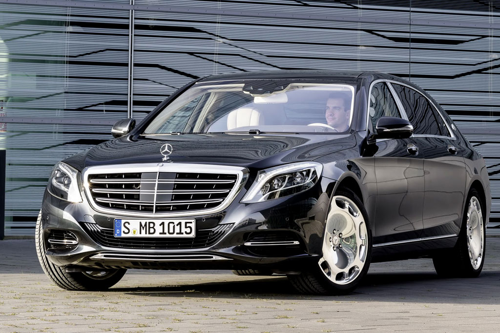
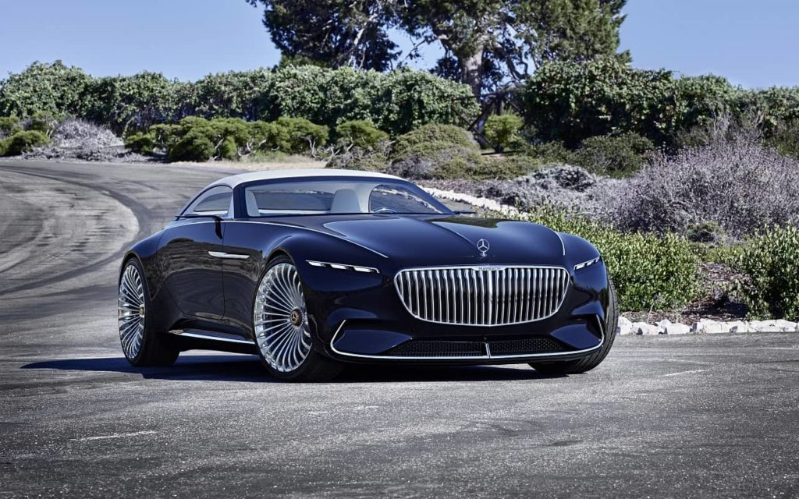
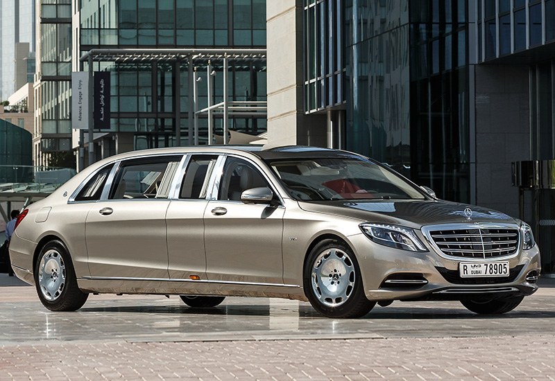
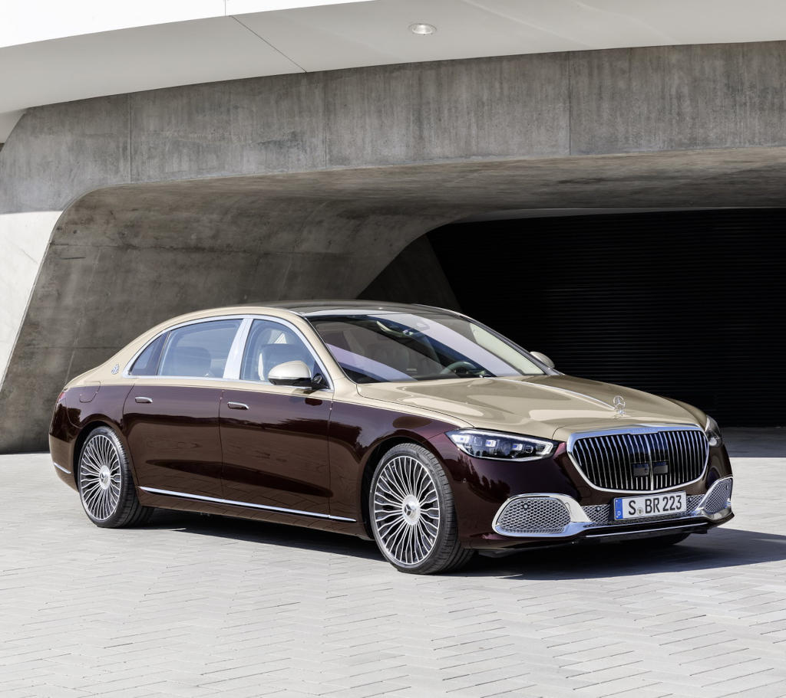
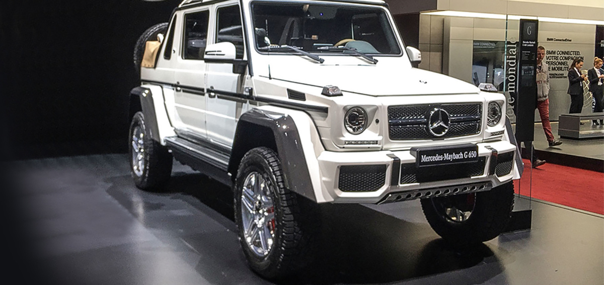

Mercedes-Maybach-ը գերմանական Daimler AG կոնցեռնի ստորաբաժանումն է, որը փոխարինել է վնասաբեր Maybach ձեռնարկությանը, որը փակվել է 2012 թվականին։ Հիմնադրվել է 2015 թվականին որպես Mercedes-Benz ենթաբրենդ:
Ընկերության կողմից արտադրված առաջին մեքենան շքեղ Mercedes-Maybach S500-ն էր՝ հիմնված 222 Series S դասի պլատֆորմի վրա։
Ավելի ուշ փոփոխություններ են ներկայացվել կաբրիոլետի և Pullman լիմուզինի հետևի մասում։ 2016 թվականի ամռան վերջին ընկերությունը ցուցադրեց կոնցեպտուալ շքեղ էլեկտրական Mercedes-Maybach Vision 6-ը:
2015 թվականի գարնանը Ժնևի ավտոսրահում Mercedes-Maybach ստորաբաժանումը ներկայացրեց Mercedes-Benz S-Class (222) տարբերակը լիմուզինի հետևի մասում՝ Mercedes-Maybach S600 Pullman:
2016 թվականի աշնանը Լոս Անջելեսի ավտոսրահում ներկայացվեց Mercedes-Maybach ապրանքանիշի ներքո առաջին կաբրիոլետը՝ Mercedes-Maybach S650-ը։
2017 թվականի մարտին Ժնևի 87-րդ ավտոսրահում ներկայացվեց G դասի ամենագնացի հատուկ տարբերակը՝ Mercedes-Maybach Landaulet G650՝ 5,35 մետր երկարությամբ [17]: Մեքենան հիմնված է G500 4x42 պլատֆորմի վրա՝ G65 AMG-ի 463 կՎտ (630 ձիաուժ) շարժիչով: Դրա շնորհիվ 3,3 տոննա կշռող ամենագնացը կարող է 0-ից 100 կմ/ժ արագություն զարգացնել վեց վայրկյանից պակաս ժամանակում և զարգացնել 180 կմ/ժ առավելագույն արագություն: Շարքը սահմանափակված է մոդելի միայն 99 միավորով և հաճախորդներին կմատակարարվի 2017 թվականի աշնանը։